5 días en sala real. Pacientes reales. Técnica, negocio y marketing incluidos.
Médicos generales y de cualquier especialidad, en cualquier nivel.
El microinjerto capilar es uno de los procedimientos estéticos con mayor demanda y mejor margen en Latinoamérica. Un solo procedimiento puede costar entre $2,000 y $5,000 USD. Y sin embargo, la mayoría de los médicos no lo ofrecen porque nunca tuvieron dónde aprenderlo bien.
Facturación potencial por procedimiento
$2,000 — $5,000 USD Uno de los procedimientos estéticos con mayor margen en LatinoaméricaCada caso es distinto. Cada paciente tiene una densidad, una línea y unas expectativas diferentes. Esto es lo que 15 años de práctica diaria producen.
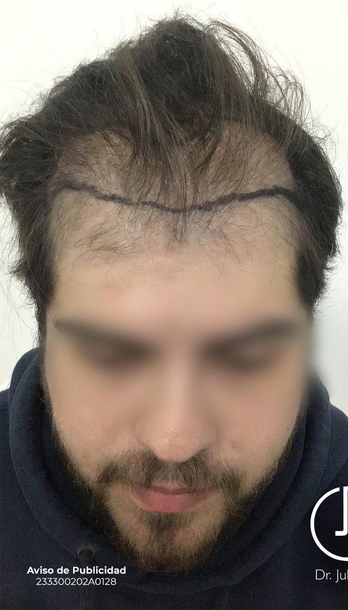
Antes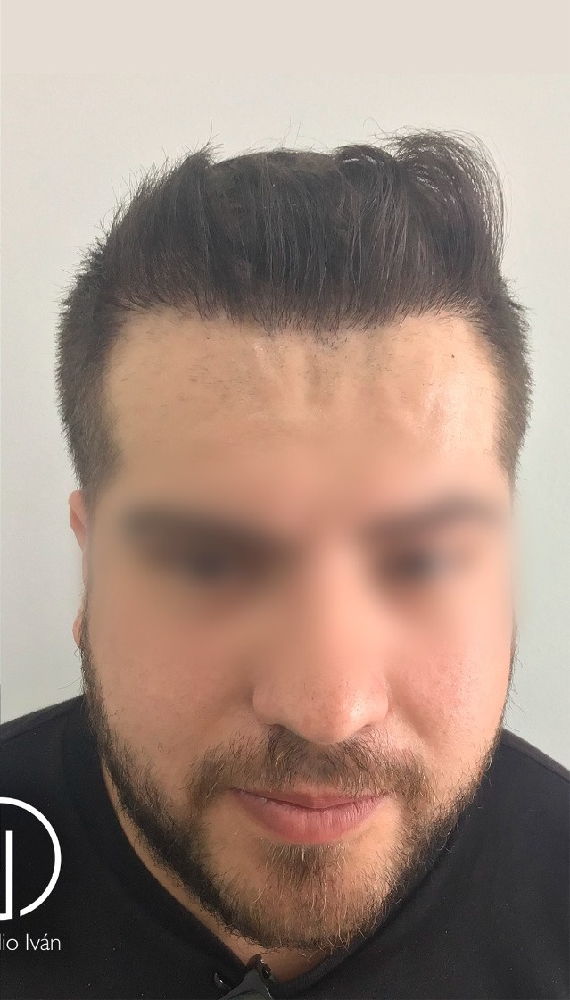
Después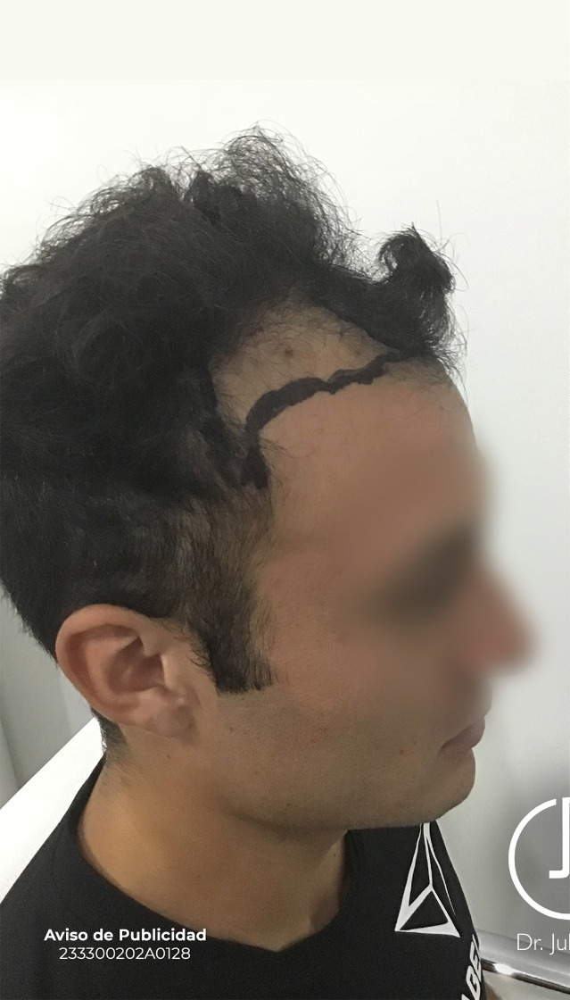
Antes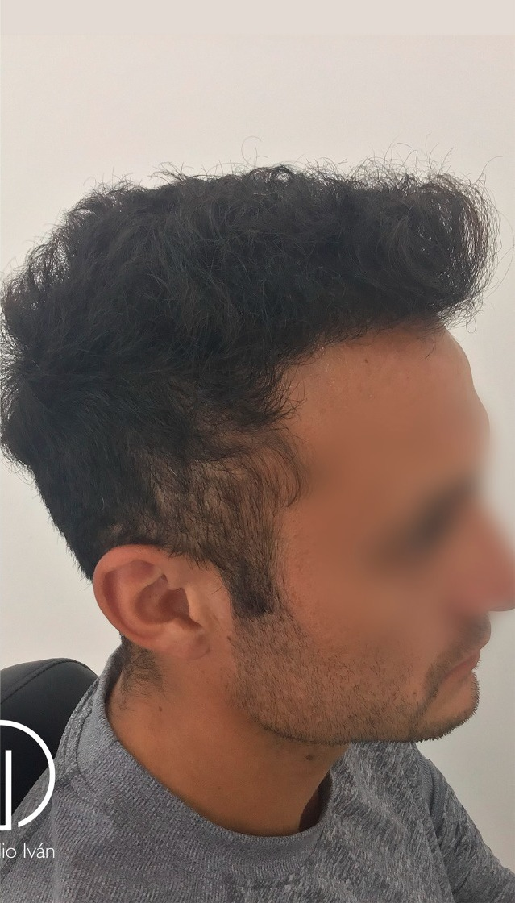
Después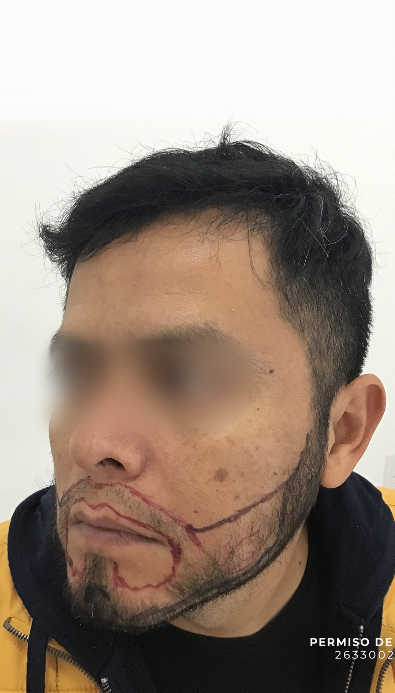
Antes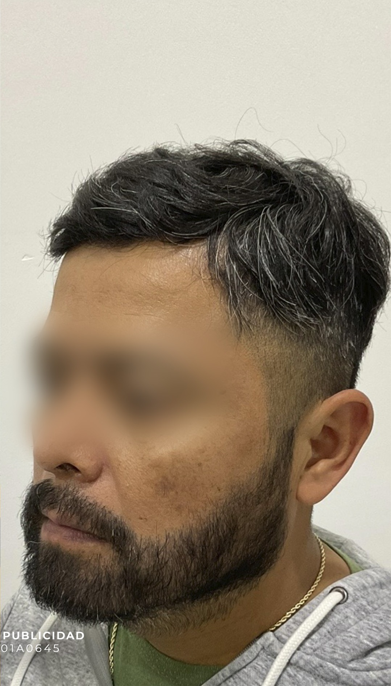
Después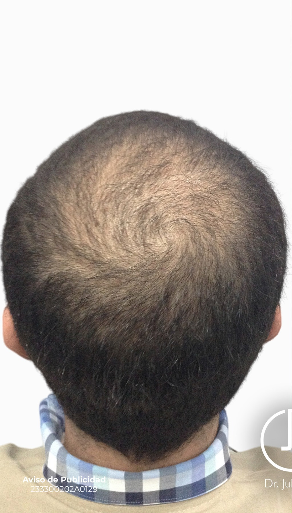
Antes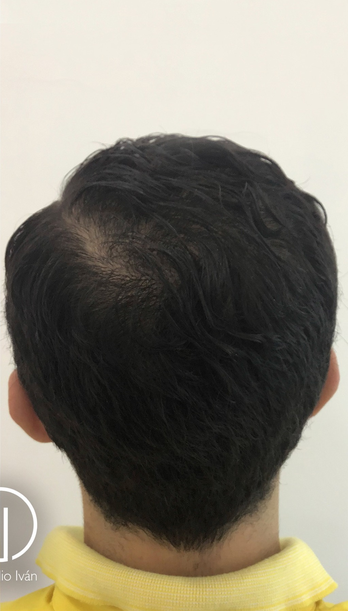
Después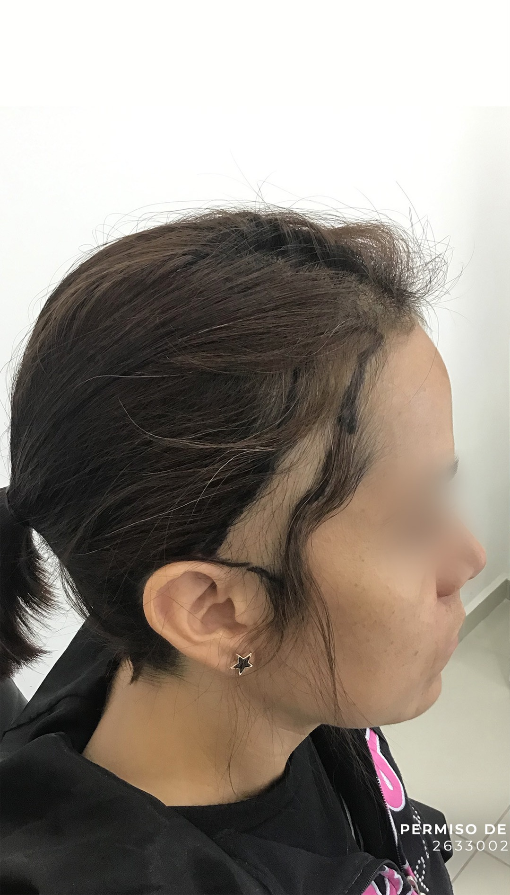
Antes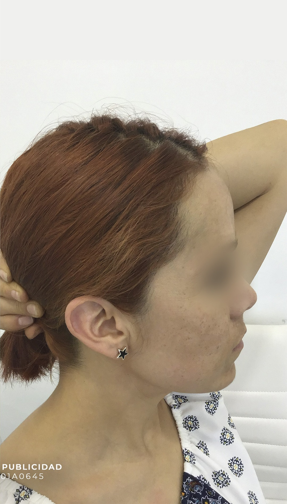
Después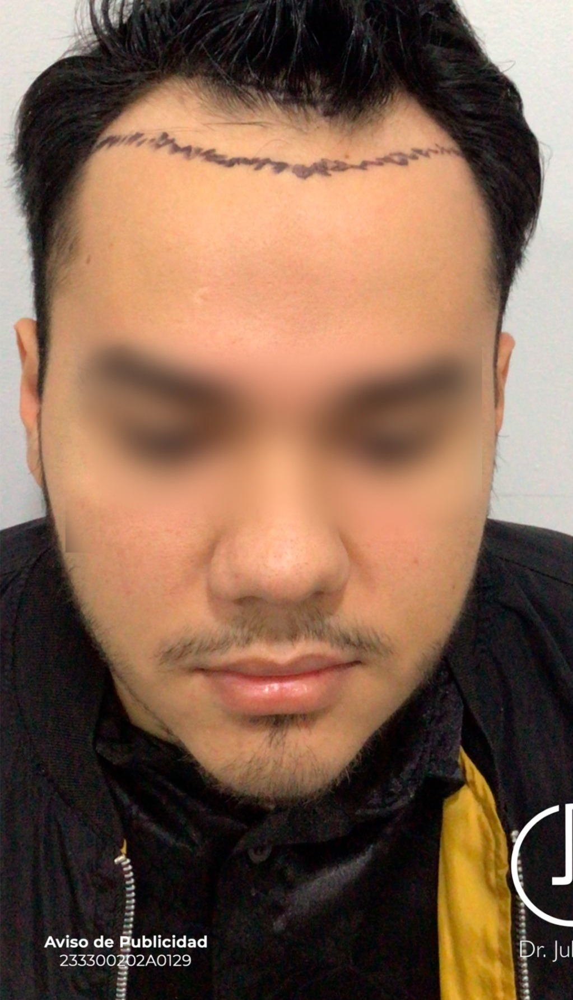
Antes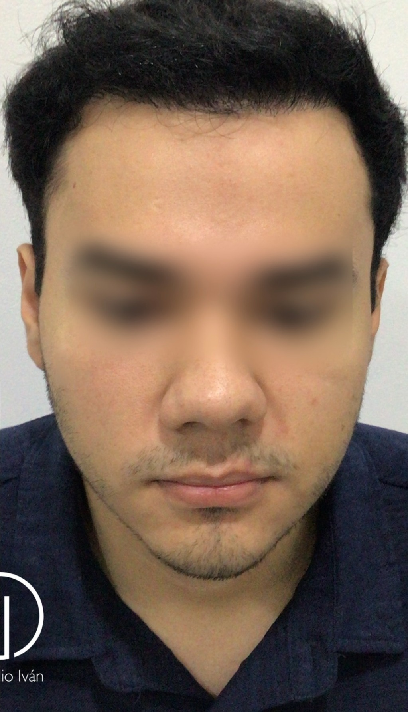
DespuésEl WIM no es un curso teórico. Es una inmersión. Entras a sala, ves cómo se hace, pones las manos encima y practicas en un paciente real. En 5 días vas a entender por qué tantos médicos eligen esta técnica como su principal fuente de ingresos.
Una cosa importante: el microinjerto capilar es una habilidad que se construye con práctica constante. El WIM te da la base técnica real, el criterio clínico y la confianza para empezar. Estamos aquí para acompañarte en ese camino.
Dos procedimientos con altísima demanda que la mayoría de los médicos no ofrece por falta de entrenamiento específico. El WIM los cubre con el mismo nivel de detalle que el trasplante capilar.
Cabelix cuenta con salas de procedimientos diseñadas específicamente para microinjerto capilar. Cuando vienes aquí, cada detalle está listo para que te concentres en aprender.
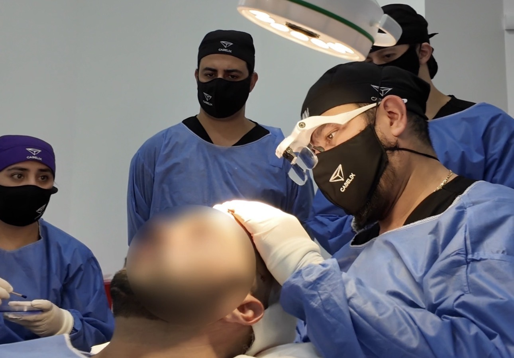
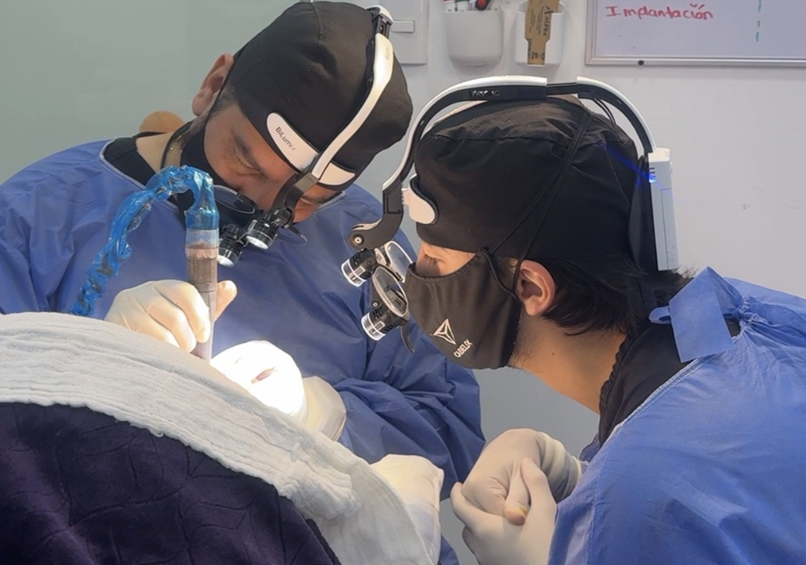
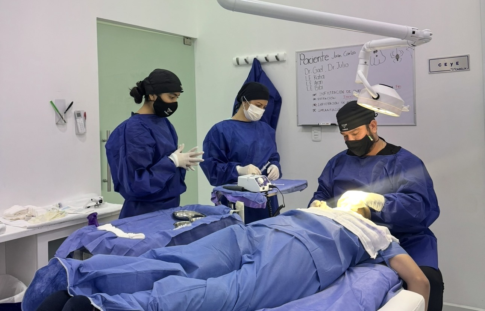
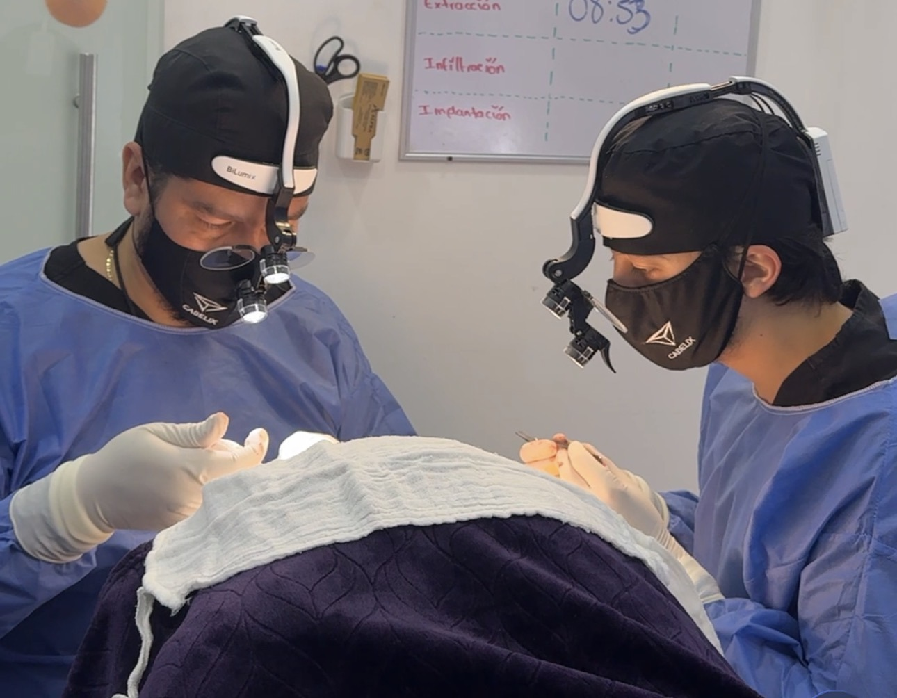
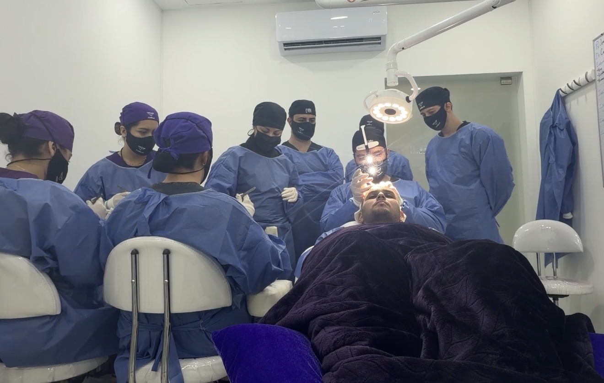
Sistema óptico de magnificación, punches de precisión, conservación de injertos y mobiliario clínico de alto nivel.
"Llegué con conocimientos básicos de dermatología pero sin ninguna experiencia en microinjerto. Lo que más me sorprendió fue la profundidad técnica — no es teoría, es sala, instrumental y paciente real desde el primer día. Volví a Panamá con criterio clínico y una estrategia clara para empezar."
"Venía con la duda de si como médico general podía aprender esto. La respuesta es sí. El programa se adapta a tu nivel y el Dr. Julio Iván tiene una forma de enseñar que hace que lo complejo se vuelva manejable. Ya estoy viendo mis primeros pacientes."
"Ya tenía algo de experiencia en procedimientos estéticos, así que fui directo a las técnicas avanzadas. El componente de administración y captación de pacientes fue lo que no esperaba y lo que más valor me dio. En 6 semanas ya recuperé una parte importante de la inversión."
Un asesor te contactará en menos de 24 horas para resolver tus dudas y ayudarte a elegir la mejor fecha.